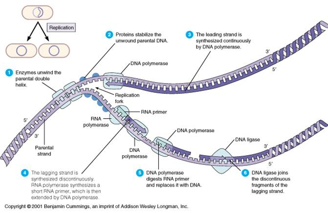
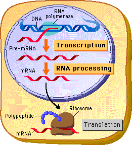
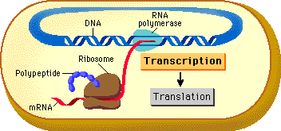
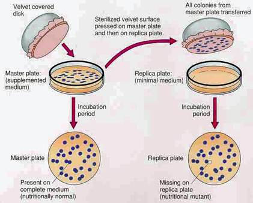
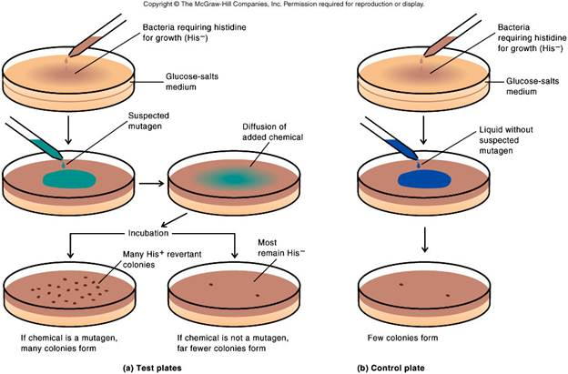

AMBE 101 :: Lecture 10 :: BACTERIAL GENETICS

Bacterial genetics is the study of gene structure and function in bacteria. Genetics itself is concerned with determining the number, location, and character of the genes of an organism. The process of replication is essential to understand in or manipulate the genome and to understand the functioning of these organisms.
DNA REPLICATION
In general, DNA is replicated by uncoiling of the helix, strand separation by breaking of the hydrogen bonds between the complementary strands, and synthesis of two new strands by complementary base pairing. Replication begins at a specific site in the DNA called the origin of replication.
How does the DNA in the bacterial cell replicate ……

Transcription in bacteria… how does it happen……
Transcription is the process by which genetic information from DNA is transferred into RNA. DNA sequence is enzymatically copied by RNA polymerase to produce a complementary nucleotide RNA strand. One significant difference between RNA and DNA sequence is the presence of U, or uracil in RNA instead of the T, or thymine of DNA. In the case of protein-encoding DNA, transcription is the first step that ultimately leads to the translation of the genetic code, via the mRNA intermediate, into a functional peptide or protein. The stretch of DNA that is transcribed into an RNA molecule is called a transcription unit. A transcription unit that is translated into protein contains sequence that directs and regulates protein synthesis in addition to coding sequence that is translated into protein. Regulatory sequence that is before, or 5', of the coding sequence is called 5' untranslated (5'UTR) sequence, and sequence found following, or 3', of the coding sequence is called 3' untranslated (3'UTR) sequence. As in DNA replication, transcription proceeds in the 5' → 3' direction. The DNA template strand is read 3' → 5' by RNA polymerase and the new RNA strand is synthesized in the 5'→ 3' direction. RNA polymerase binds to the 3' end of a gene (promoter) on the DNA template strand and travels toward the 5' end. Except for the fact that thymines in DNA are converted to uracils in RNA, the newly synthesized RNA strand will have the same sequence as the coding (non-template) strand of the DNA.
Prokaryote Eukaryote


How to undertake experiments for understanding genetics of bacteria ?
The classical way to investigate genes is to mate two organisms with different genotypes and compare the observable properties (phenotypes) of the parents with those of the progeny. Bacteria do not mate (in the usual way), so there is no way of getting all the chromosomes of two different bacteria into the same cell. However, there are a number of ways in which a part of the chromosome or genome from one bacterium can be inserted into another bacterium so that the outcome can be studied.
The first step in performing genetic research on bacteria is to select mutants that differ from wild-type cells in one or more genes. Then crosses are made between mutants and wild types, or between two different mutants, to determine dominance-recessive relationships, chromosomal location, and other properties. Various genetic methods are used to select bacterial mutants, antibiotic-resistant cells, cells with specific growth requirements, and so on.
- Mutants in bacteria are mostly biochemical in nature, because we can’t generally see the cells.
- The most important mutants are auxotrophs. An auxotroph needs some nutrient that the wild type strain (prototroph) can make for itself. For example, a trp- auxotroph can’t make its own tryptophan (an amino acid). To grow trp- bacteria, you need to add tryptophan to the growth medium. Prototrophs are trp+; they don’t need any tryptophan supplied since they make their own.
- Chemoauxotrophs are mutants that can’t use some nutrient (usually a sugar) that prototrophs can use as food. For example, lac- mutants can’t grow on lactose (milk sugar), but lac+ prototrophs can grow on lactose.
- Resistance mutants confer resistance to some environmental toxin: drugs, heavy metals, bacteriophages, etc. For instance, AmpR causes bacteria to be resistant to ampicillin, a common antibiotic related to penicillin.
- Auxotrophs and chemoauxotrophs are usually recessive; drug resistance mutants are usually dominant. A common way to find bacterial mutants is replica plating, which means making two identical copies of the colonies on a petri plate under different conditions.
- For instance, if you were looking for trp- auxotrophs, one plate would contain added tryptophan and the other plate would not have any tryptophan in it.
- Bacteria are first spread on the permissive plate, the plate that allows both mutants and wild type to grow, the plate containing tryptophan in this case. They are allowed to grow fro a while, then a copy of the plate is made by pressing a piece of velvet onto the surface of the plate, then moving it to a fresh plate with the restrictive condition (no tryptophan). The velvet transfers some cells from each colony to an identical position on the restrictive plate.
- Colonies that grow on the permissive plate but not the restrictive plate are (probably) trp- auxotrophs, because they can only grow if tryptophan is supplied.
Replica plating

The Ames test uses bacteria to test chemicalsfor capacity to cause mutations, as well as carcinogens (cancer-causing chemicals). The procedure is as fiollows:

| Download this lecture as PDF here |